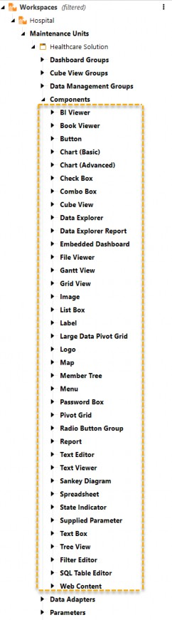

The Future of Workspaces in OneStream
In the ever-changing world of OneStream, Workspaces and Assemblies have become the go-to tools for developers. Why? Because they streamline complex development processes, making implementations clearer, more intuitive, and more flexible. These aren’t just technical components – they’re stepping stones to building smarter, scalable solutions that anticipate what’s around the corner. As businesses continue to push the limits of what can be done, these tools are ready to step up and redefine how we approach development.
OneStream has always been about innovation – it’s part of our DNA. From starting out as a unified corporate performance management platform to growing into a dynamic ecosystem for developers, OneStream has consistently raised the bar. Just think about milestones like Assembly Services or Dynamic Dashboards – they’re perfect examples of how OneStream combines innovation with practicality, always staying ahead of what’s needed.
So, where do we go from here? This chapter is all about exploring what’s next for Workspaces. Imagine AI-assisted development creating dashboards, and Cube Views from input into a chatbot, or Assembly files directly accessible from powerful IDEs. These advancements aren’t just concepts – they’re opportunities waiting to happen. And, together, they promise to take efficiency, creativity, and collaboration to new heights. In short, the future of OneStream is shaping up to be more exciting than ever!
With this innovative foundation in place, it’s clear that Workspaces and Assemblies are just the beginning of what OneStream has to offer. To truly understand the potential ahead, we must dive deeper into one of the most exciting areas of development – Dynamic Services with in-memory data and dashboards. These groundbreaking tools are set to transform how developers and users interact with data, making dashboards more intelligent, intuitive, and impactful than ever before.
The Future of Workspaces in OneStream
Concept 1: Dynamic Services Capabilities – Transforming User Interactions
Today’s businesses face rapidly changing environments, requiring tools and systems that actively evolve and innovate to meet new challenges. While companies used to concentrate on adaptability, this only focuses on being reactive to change as it happens. Evolving dynamically goes a step further, proactively anticipating shifts and making adjustments ahead of time.
This ability to grow and improve alongside complex organizational needs ensures businesses remain competitive and effective in an ever-shifting landscape. OneStream’s dynamic services embody this proactive evolution. As discussed in Chapter 8 with dynamic dashboards, these services encompass dynamic grids, Cube Views, cubes, and dimensions, forming the backbone of an agile and forward-thinking development framework.
By enabling applications that predict needs, adapt to evolving requirements, and drive smarter decision-making, dynamic services offer real-time updates, multidimensional analysis, and hierarchical flexibility, paving the way for innovative enterprise solutions that keep businesses ahead of the curve.
By the time this book gets published, OneStream will have already released multiple new dynamic services that will transform the way organizations can leverage OneStream. Moving from here and beyond, OneStream will continue to invest R&D into creating additional dynamic services.
Here is a list of known dynamic services that will be coming out.
The Future of Workspaces in OneStream › Concept 1: Dynamic Services Capabilities – Transforming User Interactions
Dynamic Grids
This component maintains the core functionality of the SQL Table Editor component while enhancing the flexibility of data presentation and end-user interaction. The dynamic grid component displays data in a tabular format from a Workspace Assembly-driven data source. Each column represents a field, and each row represents a record. This grid enables you to read data from any source, transform that data, and write it back to any specified target. This offers a flexible and high-performance feature for managing datasets of any shape or size. It supports paging, dynamic columns, and custom formatting.
Key Features:
Flexible data transformation: Read, write, and transform data from any source using Workspace Assemblies.
Volume performance: Manage large datasets efficiently with paging.
Dynamic columns: Add, remove, and modify columns.
Custom formatting: Apply custom formatting to data for better visualization. Use Cases:
Real-Time Data Manipulation: Users can modify datasets directly within the grid, enabling quick adjustments during financial planning or scenario modeling.
Customizable Views: Developers can offer tailored grid interfaces, providing only the columns or rows relevant to specific users or tasks.
On-The-Fly Table Creation: Businesses can dynamically generate tables to explore different data perspectives without needing full database rebuilds. Tables could even be virtual, reading and saving data from simple dashboard parameters or files!
The result is a powerful tool that blends the robustness of SQL with the flexibility of modern user interfaces, fostering a seamless bridge between raw data and actionable insights.
The Future of Workspaces in OneStream › Concept 1: Dynamic Services Capabilities – Transforming User Interactions
Dynamic Cube Views Services
Dynamic Cube Views in OneStream revolutionize data presentation by dynamically tailoring what data is displayed, based on factors like user attributes and security settings. This ensures that each user sees only the relevant information they are authorized to access, without requiring the manual creation of multiple static Cube Views.
By replacing the need for numerous similar but slightly varied Cube Views, dynamic Cube Views significantly streamline administration and reduce redundancy. With this capability, a single stored Cube View can dynamically produce hundreds of permutations, offering immense flexibility while maintaining simplicity and efficiency in dashboard development. This innovation enhances both the developer’s and the end user’s experience by providing tailored, secure, and scalable data visualization solutions.
The Future of Workspaces in OneStream › Concept 1: Dynamic Services Capabilities – Transforming User Interactions
Dynamic Data, Dimensions, and Cubes
The Dynamic Data Assembly Service type in OneStream is a powerful capability designed to enhance how data is retrieved, assembled, and rendered dynamically within applications. This service allows for highly configurable and responsive data handling to and from any source system. By leveraging this service, developers can construct solutions that eliminate the need for static, predefined datasets, enabling real-time adaptability to changes in user requirements or organizational structures.
The dynamic data Assembly service significantly reduces redundancy and simplifies data management by assembling data on the fly, and allows real-time data refreshing without additional data imports. This not only improves efficiency but also supports the creation of scalable and flexible applications that can handle complex, multidimensional business scenarios.
Dynamic dimensions in OneStream enable the creation of in-memory dimensional structures that serve as the foundation for dynamic cubes. These dimensions are defined and stored temporarily in memory rather than being fixed within the application’s underlying configuration. This flexibility allows developers to construct dimensions based on contextual factors, without the need for alternate hierarchies that can clutter your application.
Dynamic cubes leverage these in-memory dimensions to generate multidimensional datasets that act as virtual cubes. While these cubes are not physically stored, they emulate the functionality of traditional cubes, allowing developers and users to report on, analyze, and interact with data as if it were part of an actual cube structure. This capability facilitates real-time analytics, enabling businesses to adapt to evolving requirements without the overhead of static configuration or prebuilt data structures.
As an example, for those of you familiar with OneStream’s People Planning solution, you understand that you can have employee-level data in a relational flat table called a ‘Register’. Imagine being able to create an Employee dimension on the fly, in-memory, and reporting on the register data as if it were sitting in a multidimensional cube. All without affecting the performance of any stored data cube. The possibilities are endless.
The combination of dynamic dimensions and dynamic cubes streamlines development workflows, eliminates redundancy, and enhances performance by creating adaptable, scalable solutions for complex data environments. It allows organizations to quickly assemble tailored datasets that align with their needs, while maintaining the power and flexibility of multidimensional reporting.
The Future of Workspaces in OneStream › Concept 1: Dynamic Services Capabilities – Transforming User Interactions
Dynamic Services Impact
The introduction of dynamic dashboard service capabilities has fundamentally altered the landscape of application development and user interaction within OneStream. Similarly, OneStream will continue to empower businesses with dynamic services like dynamic grids, Cube Views, cubes, and dimensions. Developers can build solutions that are not only responsive to user needs but also highly performant and capable of evolving alongside the organization.
The Future of Workspaces in OneStream
Concept 2: Expansion of the Component Library
OneStream has demonstrated a consistent commitment to enhancing its dashboard development toolkit by continuously expanding the Component Library. This ongoing innovation is exemplified by recent additions like the Menu Component, which streamlines navigation through customizable frameworks tailored to user roles and business requirements.
These advancements not only address specific challenges faced by developers but also embody a broader vision of efficiency and scalability. The steady growth of the component library reflects OneStream’s dedication to empowering developers with diverse and cutting-edge tools, laying the groundwork for more advanced and collaborative dashboard features in the future. Such progress underscores OneStream’s resolve to innovate and provide high-quality solutions that meet the evolving demands of businesses and users alike.
The Future of Workspaces in OneStream › Concept 2: Expansion of the Component Library
Future Directions
OneStream is always looking to develop new dashboard components and actively recruits suggestions from customers and partners through our OneStream IdeaStream website, which allows customers and partners to contribute their ideas, share feedback, and propose enhancements for OneStream products and solutions. By encouraging user-driven suggestions, IdeaStream ensures that OneStream’s development roadmap is guided by the real-world needs and experiences of its users. This platform exemplifies OneStream’s commitment to continuously refining and evolving its offerings to better support businesses in achieving their goals.
Here is a list of the current dashboard components, illustrating the sheer volume of existing dashboard development tools that OneStream has already completed, and giving you an idea of OneStream’s commitment to continuing to enhance and innovate our capabilities:

Figure 12.1
The continued expansion of the component library represents a critical opportunity for OneStream to continue aligning development capabilities with the complexities of modern business processes. As the library grows, it will strengthen OneStream’s ability to support scalable, innovative solutions that serve both developers and users effectively.
The Future of Workspaces in OneStream
Concept 3: AI-Assisted Dashboard Creation – The Next Frontier
One very exciting stream of development that OneStream is actively developing is AI capabilities within the OneStream Platform. There are many AI workstreams currently being developed at OneStream, but the one I would like to discuss is the introduction of AI capabilities to help users build dashboards.
The Future of Workspaces in OneStream › Concept 3: AI-Assisted Dashboard Creation – The Next Frontier
From Manual to AI-Assisted
Dashboard development has come a long way from painstaking manual assembly to more streamlined, component-based approaches. However, even with these advancements, building a dashboard still requires significant time, effort, and expertise.
Now, imagine a paradigm shift: a future where AI takes on much of the heavy lifting, transforming the developer’s role from manual creator to strategic collaborator. With AI-assisted dashboard creation, developers can move beyond tedious setup tasks and focus instead on refining insights, enhancing user experiences, and unlocking new capabilities. New users to OneStream will also benefit from accelerating dashboard creation in a more wizard-based approach. This evolution represents not just an incremental improvement but a revolutionary step forward in application development within OneStream.
The Future of Workspaces in OneStream › Concept 3: AI-Assisted Dashboard Creation – The Next Frontier
AI and Assembly Services
The recent introduction of Assembly Services and Dynamic Dashboards has laid the groundwork for integrating AI into OneStream’s development ecosystem. These innovations have provided developers with a modular, extensible framework that supports dynamic behavior and real-time adaptability – perfect conditions for harnessing AI’s potential.
The Future of Workspaces in OneStream › Concept 3: AI-Assisted Dashboard Creation – The Next Frontier › AI and Assembly Services
How Assembly Services Might Enable AI Integration
Assembly Services offer modularity and scalability, ensuring that AI-powered components can be easily integrated into existing applications.
Dynamic dashboards provide a flexible canvas where AI can analyze data structures and generate tailored suggestions, enabling fluid and intuitive development workflows.
The synergy between these foundational elements sets the stage for AI to become an essential partner in building smarter, faster, and more impactful dashboards!
The Future of Workspaces in OneStream
Concept 4: IDE Integration
The Future of Workspaces in OneStream › Concept 4: IDE Integration
Integration with IDEs (e.g., Visual Studio)
OneStream is exploring a number of approaches to make it easier for developers to access our code with external IDEs, to improve the development experience and lifecycle management. A virtual file share would serve as the foundation for integrating OneStream with widely used Integrated Development Environments (IDEs) like Visual Studio. This integration would dramatically elevate developer workflows, empowering OneStream developers to leverage features typically reserved for traditional programming.
The Future of Workspaces in OneStream › Concept 4: IDE Integration › Integration with IDEs (e.g., Visual Studio)
How IDE Integration Enhances Development
The Future of Workspaces in OneStream › Concept 4: IDE Integration › Integration with IDEs (e.g., Visual Studio) › How IDE Integration Enhances Development
IntelliSense
Developers can access powerful IntelliSense functionality for autocompleting code, identifying methods and classes, and reducing errors while writing Assembly code. This greatly improves speed and accuracy during development.
The Future of Workspaces in OneStream › Concept 4: IDE Integration › Integration with IDEs (e.g., Visual Studio) › How IDE Integration Enhances Development
Advanced Debugging Tools
Real-time debugging capabilities will enable developers to pinpoint issues in their Assemblies with precision. Breakpoints, call stack inspection, and variable tracking will simplify troubleshooting.
The Future of Workspaces in OneStream › Concept 4: IDE Integration › Integration with IDEs (e.g., Visual Studio) › How IDE Integration Enhances Development
Code Linting
IDE-based linting tools can analyze code for issues or inefficiencies, ensuring that Assemblies are optimized for performance and maintainability.
The Future of Workspaces in OneStream › Concept 4: IDE Integration › Integration with IDEs (e.g., Visual Studio) › How IDE Integration Enhances Development
Assembly Testing
Developers will be able to compile their Assemblies directly within the IDE, using robust testing frameworks to validate functionality before deployment.
With IDE integration, OneStream will incorporate industry-best development practices, providing developers with tools to innovate faster while maintaining high standards of quality.
The Future of Workspaces in OneStream
Concept 5: Genesis: Empowering Creativity and Accelerating Value
Genesis is OneStream’s groundbreaking no-code solution, designed to unlock the full potential of your OneStream investment. It transforms the way dashboards are developed by enabling users to design and build dashboards without needing to write a single line of code. By offering reusable, templated layouts called Content Blocks, Genesis empowers users to bring their creative visions to life while eliminating complexity.
With Genesis, the speed of innovation reaches new heights. Power users can adapt existing content or create new dashboards – streamlining development and accelerating time to value. Built on OneStream’s unified platform and data model, Genesis not only fosters rapid deployment but also ensures strict governance and security to build trust across the organization.
This solution represents a leap forward in usability, accessibility, and innovation, empowering development teams and power users to design highly curated experiences that evolve alongside business needs. By bridging functionality with user creativity, Genesis sets the stage for an era of rapid, impactful development that aligns with the pace of modern enterprise demands.
The Future of Workspaces in OneStream
Conclusion: Embracing the Future
The potential for OneStream to revolutionize Workspaces and Assemblies is immense, with a continuously expanding roadmap of goals that promise to redefine the platform. While these capabilities may not yet be fully realized, the vision is bold, and the possibilities are inspiring.
The concept of dynamic services sets the stage for a new level of adaptability and interactivity. Envisioning tools like dynamic grids, Cube Views, and dimensions offers a glimpse of what’s possible: dashboards and data that respond to change in real time, allowing users to analyze and interact with data with unprecedented agility. These innovations aim to empower organizations to be more responsive, efficient, and effective.
The component library offers tremendous potential to accelerate development and improve application capabilities. By expanding this library with advanced charting tools and cross-application collaboration features, OneStream aspires to provide developers with a rich toolkit for creating cutting-edge solutions. Each new addition enhances how developers approach their work, streamlining efforts and enabling greater customization.
Integrating AI-assisted dashboard creation into OneStream’s ecosystem is an exciting frontier. The goal is to harness AI to simplify and enhance dashboard development, from suggesting layouts and placing components to surfacing AI-driven insights. This vision anticipates a future where AI becomes a collaborative partner, helping developers produce dashboards that are not only faster to build but also smarter and more user-centric.
The dream of a virtual file share and IDE integration represents a transformative leap forward for developers. By creating seamless compatibility with tools like Visual Studio, OneStream will open new doors for collaboration, efficiency, and innovation. Features like IntelliSense, advanced debugging, and integrated testing are on the horizon, aimed at elevating OneStream development to match the flexibility and power of industry-standard tools.
Genesis introduces a powerful no-code solution that unlocks the full potential of your OneStream investment. By accelerating time to value, Genesis provides users with a flexible structure to quickly develop and deploy solutions tailored to their needs. Genesis empowers users to bring their creative vision to life with intuitive tools, eliminating the need to learn complex coding. Whether refining Cube Views or crafting dashboards, Genesis enables innovation at the speed of business, fostering efficiency and customization that drive impactful results.
These goals reflect OneStream’s aspiration to bridge gaps and push boundaries, aligning the platform with the evolving needs of developers and organizations alike. While all of these innovations may not be here today, they illuminate the path forward, offering a vision of where OneStream is headed.
As these ideas take shape, it will be up to developers and users to embrace change, adapt to new tools, and lead the charge in this era of transformation. The journey to realize these goals may be challenging, but the rewards will be extraordinary – a platform that empowers creativity, amplifies efficiency, and delivers unparalleled solutions. The future of Workspaces and Assemblies is not yet written, but the opportunities ahead are boundless!